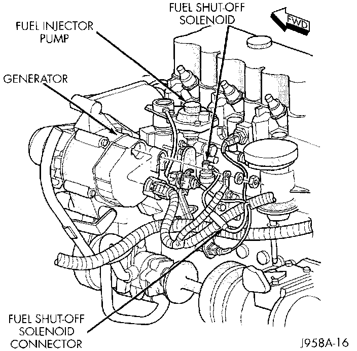
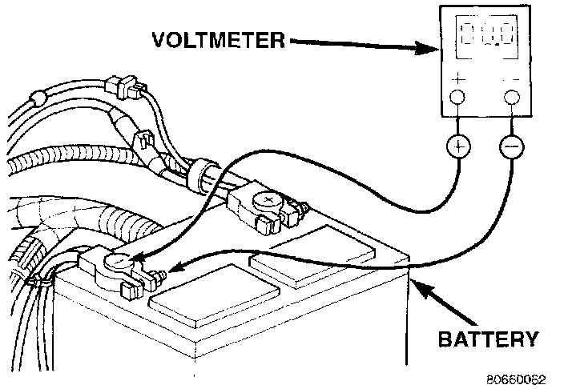
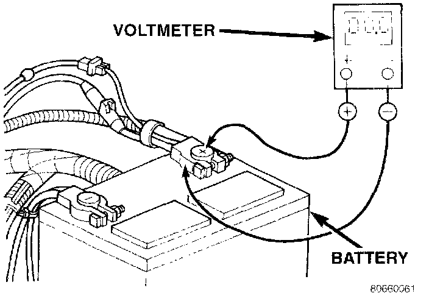
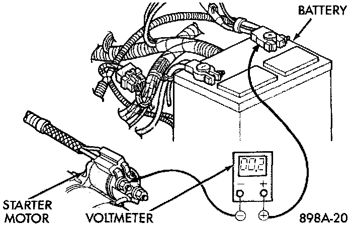
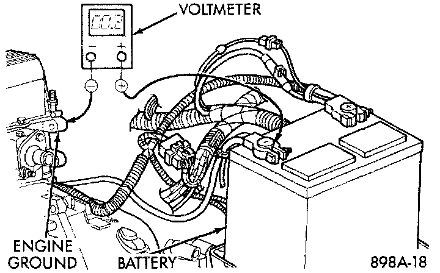
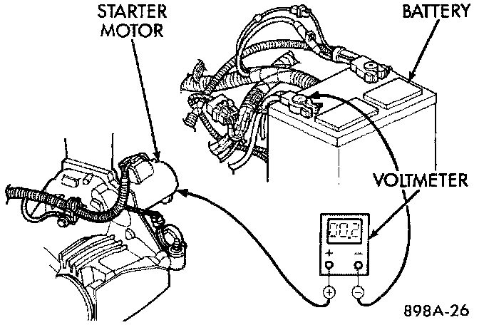

Feed Circuit Test
The starter feed circuit test (voltage drop method) will determine if there is excessive resistance in the high-amperage circuit.When performing these tests, it is important to remember that the voltage drop is giving an indication of the resistance between the two points at which the voltmeter probes are attached.
Example: When testing the resistance of the battery positive cable, touch the voltmeter leads to the battery positive cable clamp and the cable connector at the starter solenoid. If you probe the battery positive terminal post and the cable connector at the starter solenoid, you are reading the combined voltage drop in the battery positive cable clamp-to-terminal post connection and the battery positive cable.
The following operation will require a voltmeter accurate to 1/10 (0.10) volt. Before performing the tests, be certain the following procedures are accomplished:
- Battery is fully-charged.
- Fully engage the parking brake.
- If the vehicle is equipped with an automatic transmission, place the gearshift selector lever in the Park position. If the vehicle is equipped with a manual transmission, place the gearshift selector lever in the Neutral position and fully depress the dutch pedal.
Fuel Shut Off Solenoid Connector:

- Unplug the Automatic Shut Down (ASD) relay to prevent a gasoline engine from starting. The ASD relay is located in the Power Distribution Center (PDC). Refer to the PDC label for ASD relay identification and location. To prevent a diesel engine from starting, unplug the fuel shut off solenoid wire harness connector.
Test Battery Negative Connection Resistance - Typical:

1. Connect the positive lead of the voltmeter to the battery negative terminal post. Connect the negative lead of the voltmeter to the battery negative cable clamp. Rotate and hold the ignition switch in the Start position. Observe the voltmeter. If voltage is detected, correct the poor contact between the cable clamp and the terminal post.
Test Battery Positive Connection Resistance - Typical:

2. Connect the positive lead of the voltmeter to the battery positive terminal post. Connect the negative lead of the voltmeter to the battery positive cable clamp. Rotate and hold the ignition switch in the Start position. Observe the voltmeter. If voltage is detected, correct the poor contact between the cable clamp and the terminal post.
Test Battery Positive Cable Resistance - Typical:

3. Connect the voltmeter to measure between the battery positive terminal post and the starter solenoid battery terminal stud. Rotate and hold the ignition switch in the Start position. Observe the voltmeter. If the reading is above 0.2 Volt, clean and tighten the battery cable connection at the solenoid. Repeat the test. If the reading is still above 0.2 Volt, replace the faulty battery positive cable.
Test Ground Circuit Resistance - Typical:

4. Connect the voltmeter to measure between the battery negative terminal post and a good clean ground on the engine block. Rotate and hold the ignition switch in the Start position. Observe the voltmeter. If the reading is above 0.2 Volt, clean and tighten the battery negative cable attachment on the engine block. Repeat the test. If the reading is still above 0.2 Volt, replace the faulty battery negative cable.
Test Starter Ground - Typical:

5. Connect the positive lead of the voltmeter to the starter housing. Connect the negative lead of the voltmeter to the battery negative terminal post. Rotate and hold the ignition switch in the Start position. Observe the voltmeter. If the reading is above 0.2 Volt, correct the poor starter to engine block ground contact. If the resistance tests detect no feed circuit problems, remove the starter and see the Solenoid Test procedure.